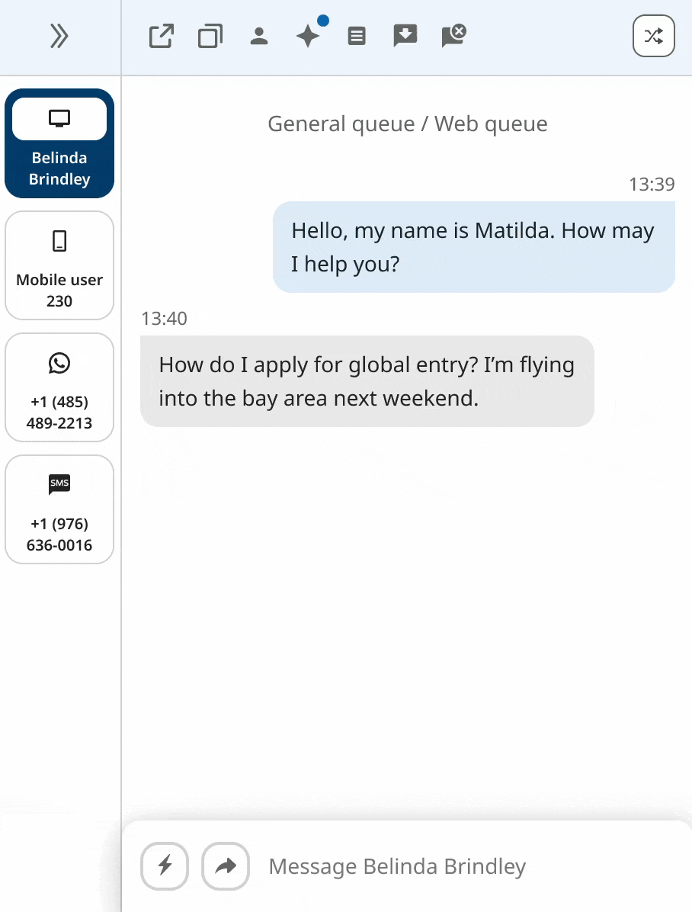
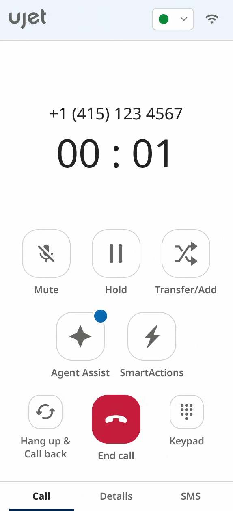

As I began designing new features, I discovered there were inconsistencies between the live application and our designs. Previous projects created assets and components from scratch for each time and never published in a global library. This meant that components had multiple variants with no consistency. None of the previous design existed in our Figma files so we'd have to rebuild the design in order to properly update features. We had an existing early-stage design system that was in the process of being implemented into a Storybook library.
Components were created in siloed projects with no shared source of truth until recently.
Each communication channel operated in its own entity on variable platforms with distinct interfaces.
Inconsistencies from the design to the live platform stemmed from engineers lacking key design details and a fast-paced development cycle. These issues led to increased QA time and a slower delivery.
Achieve design consistency across a mobile app, desktop application, admin portal, and three channel-specific products.
I had previous experience creating small-scale design systems for websites. However this design system would be large in scale with multiple platforms. I would also be adapting from an existing brand and design system rather than creating one from scratch.
To help me with this endeavor, I researched other design systems like Material, Carbon, Lightning, Atlassian, and Fluent. I learned and took inspiration on how to organize component libraries, as well as creating token variables and documentation.
From my previous experiences, I understood basic accessibility such as color contrast and minimum mobile button sizes. However there was an initiative to integrate WCAG 2.2 AAA compliance. To help with this initiative, the product and engineering teams attended accessibility workshops.

Accessibility documentation I wrote
Each platform was developed by separate designers and had unique requirements, we decided to build individual design systems tailored to their specific needs. We maintained general consistency of the design foundation with some exceptions.
I implemented design tokens to be used for the global design system for colors, type, icons, and shadows. In order reduce confusion between the design and engineering team, I created a spreadsheet to track changes to our global tokens. Along with implementation, I implemented governance on naming conventions for tokens and components.

To resolve issues of scalability and consistency, I adopted Atomic Design principles by breaking UI elements into modular, reusable components. This allowed us to modernize the UI and streamline cross-platform design.

I developed comprehensive documentation for each component including:

After implementing a few platform design systems, I received positive feedback from the design, engineering, and product management team for improving our internal cross-team process and communication. The design system will always be a work-in-progress and constantly being iterated on. In the end, it increased collaboration efforts between teams for smoother processes.
Visual and functional inconsistencies between the live application and designs were significantly reduced
Centralized documentation, component libraries, and governance improved cross-team communication and improved processes
The modular UI architecture and responsive Figma components improved efficiency for scalable growth


In hindsight, I learned that maintaining separate design systems for each platform led to new inconsistencies especially as the design team expanded and designers began implementing their own solutions. To address this, we established a unified, high-level design system that consolidated foundational elements such as global color and type tokens, atom-level components, and iconography. This system allowed each platform to maintain flexibility through their own design systems, while still inheriting from the global foundational core.
In addition, I researched and implemented an open-source React component library to accelerate development workflows. This decision was driven by our fast-paced environment and helped engineers build components more efficiently while maintaining consistency with the design foundation.
This experience deepened my understanding of large enterprise-level design systems and highlighted the importance of governance. Learning from my failures, I look forward to creating better and improved design systems.